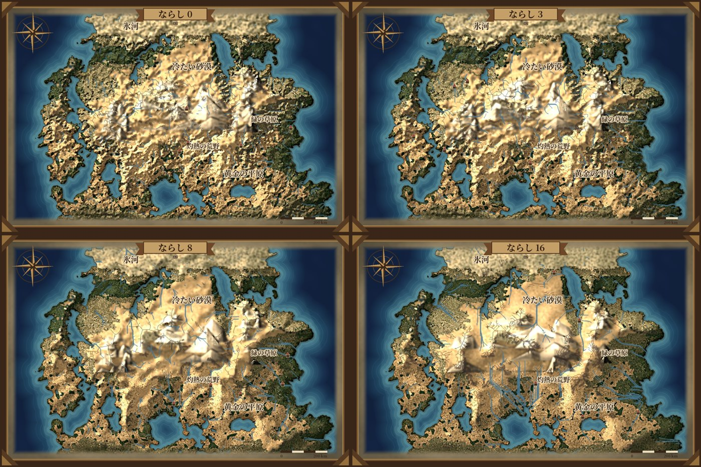
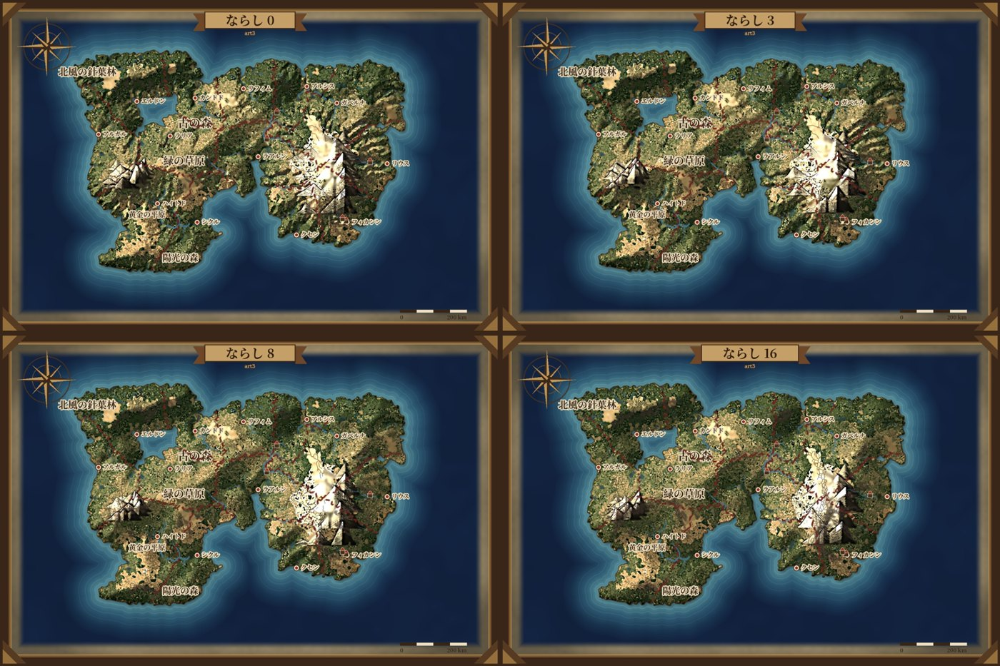

結論: この試みは失敗です。やり方が間違っていました。(ユーザー指摘 11-20 05:48)
間違いの中身: 「元データが細か過ぎる」を、データをならす(平均する)ことで直そうとしました。ならせば絵がぼけるのは当たり前で、必要だったのはデフォルメ(特徴を選んで強調し、形を単純にして描くこと)です。しかも03:39にユーザーが「山や地形の表情をデータを元にデフォルメする」と指示済みで、同じ取り違えを繰り返しました。
正しい方向(ユーザー指摘): ①地形のデフォルメ: 細かい凹凸を平均して消すのではなく、山の頂・稜線・谷という特徴を取り出し、高い所はより高く尖らせ、低い所はより平らにして、特徴を強調する。②描き方の形のデフォルメ: 山の形を、特徴のある少数の単純な形(非対称の三角の峰など)に決めて描く。この2つをやるべきです。
同じ世界の陸の高さだけを、4段階(ならし0=元のまま・3・8・16)でならし、陸と海の区別・群系・国はそのままにして、今の標準処理(世界ごとの手調整なし)で描きました。左上=ならし0、右上=3、左下=8、右下=16。各1枚・各約20秒。

絵番号 E109
絵番号 E110次: 地形のデフォルメ(特徴を選んで強調・単純化)と、描き方の形のデフォルメ(少数の山の形)を作り、同じ世界で比べる。